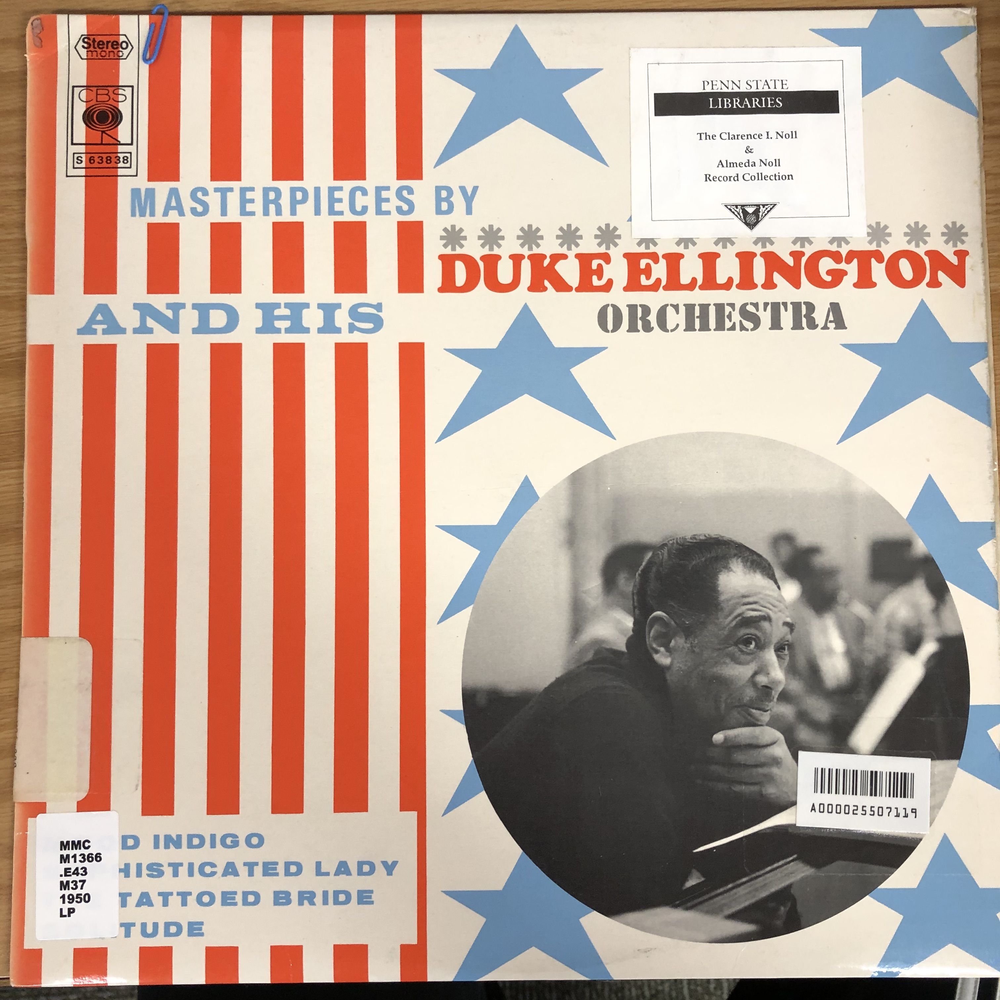

Day 36

Duke Ellington ◆ Mood Indigo ◆ 1930
之前学校图书馆 把库存的爵士唱片都摆出来，我请管理员推荐一张，正面第一首就是它。像人声的长号太神奇了www
You ain't been blue, no, no, no
You ain't been blue
Till you've had that mood indigo
That feelin' goes stealin' down to my shoes
While I sit and sigh, "Go 'long blues"
Always get that mood indigo
Since my baby said goodbye
In the evenin' when lights are low
I'm so lonesome I could cry
'Cause there's nobody who cares about me
I'm just as blue as blue could be
Always get that mood indigo
Since my baby said goodbye
Blues on my mind
Blues all around my head, ooo ooo
Blues on my mind
Blues all around my head, oo oo yeah
Woke up this morning
But I'd be better off dead, uh huh
You ain't been blue, no, no, no
You ain't been blue
Till you've had that mood indigo
That feelin' goes stealin' down to my shoes
While I sit and sigh, "Go 'long blues"
Blues on my mind
Blues all around my head
Blues on my mind
Blues all around my head
Woke up this morning
But I'd be better off dead, uh huh
Take it away boys
Yeah
Come on, play that thing
Oh hoh
Yeah, woo